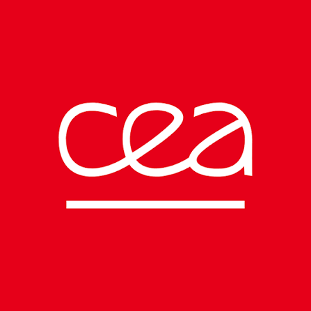
DATA · AI · CLOUD · AI SECURITY
Transformer la donnée.
Construire l’IA.
Créer l’impact.
Je suis Dr. Michel MAMA TOULOU, Data & AI Architect, consultant et formateur. J’accompagne les entreprises et les professionnels dans la conception, l’industrialisation et l’adoption de solutions Data, IA, Cloud et AI Security, de l’architecture jusqu’à la mise en production.
13certifications professionnelles
Microsoft & HashiCorpPhDPhysique numérique
Microsoft & HashiCorpPhDPhysique numérique
DR. MICHEL MAMA TOULOUDATA · IA · CLOUD
POUR CELLES ET CEUX QUI VEULENT PASSER À L’ACTION
Professionnels✳Personnes en reconversion✳Équipes & entreprises
QUELQUES RÉFÉRENCES
Des équipes accompagnées.
Des compétences en mouvement.
Des parcours et projets menés auprès d’organisations de secteurs variés.
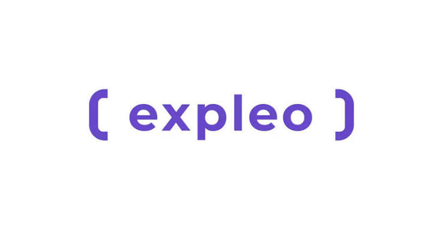
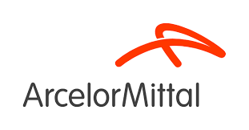
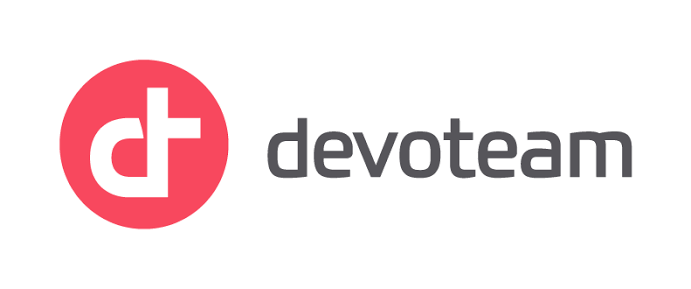
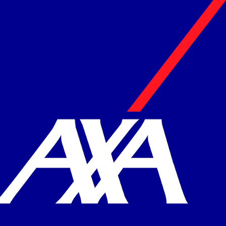
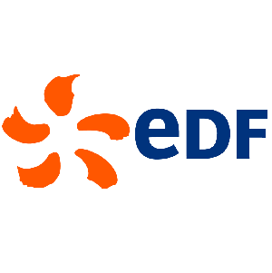
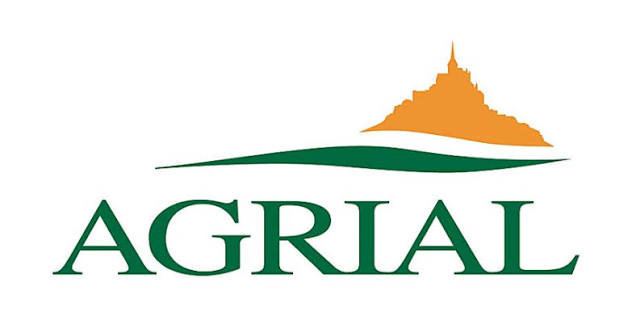
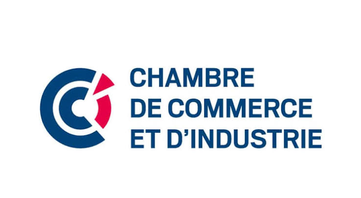
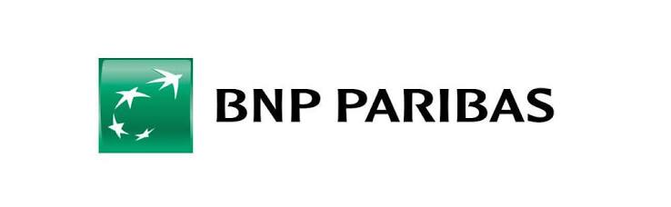
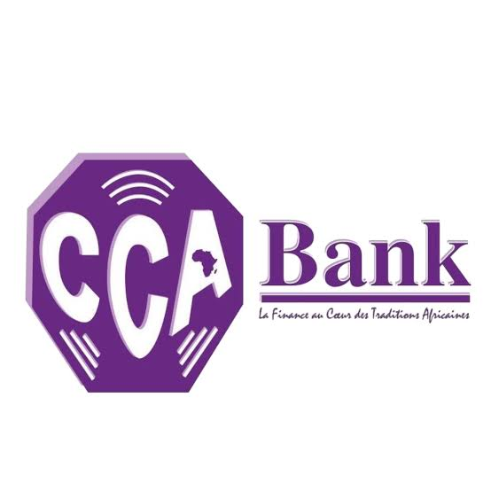
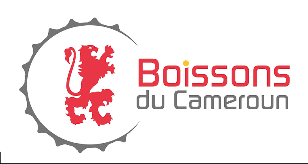
01 — EXPERTISES
Un fil conducteur :
rendre les choses possibles.
Une expertise transversale pour relier stratégie, technologie et usages. Avec un objectif concret : vous rendre autonome et faire avancer vos projets.
Ingénierie
de la donnée
Collecter, transformer, structurer et valoriser vos données. Concevoir des plateformes robustes, du pipeline à l’analytique.
Intelligence
artificielle
Du cas d’usage au déploiement : concevoir et industrialiser des solutions IA utiles, sécurisées et gouvernées.
Cloud &
plateformes
Construire, migrer et opérer vos environnements cloud ou hybrides avec les bonnes pratiques d’architecture et de DevOps.
DATA → AI → CLOUD → SECURITY → TRANSFORMATION
Concevoir les systèmes.
Sécuriser les usages. Transmettre.
Une vision qui relie architecture, ingénierie, gouvernance et adoption, en fonction des besoins métier et de la réalité des équipes.
01 · EXPERTISEAI Security
Agentic AI
Réalisations
AI Security
& Governance
Intégrer les contrôles, la protection des données et la gouvernance dès la conception des solutions IA.
Explorer l’expertise ↗02 · EXPERTISEAgentic AI
& systems
Concevoir des workflows d’agents évaluables, observables et supervisés.
Explorer l’expertise ↗03 · PROJETSRéalisations
& études de cas
Des fiches de projets seront publiées lorsqu’elles pourront être décrites et vérifiées.
Voir la page ↗DEUX PORTES D’ENTRÉE
Progresser en tant que professionnel.
Faire évoluer une organisation.
Le format et le niveau d’intervention s’adaptent au public, à l’objectif et aux contraintes du projet.
LEARNING · PROJETS ÉDUCATIFS
Faire circuler les savoirs
et construire des parcours.
Power Inside Data Academy et AI Learning OS sont présentés comme des projets en développement. Leurs accès publics seront reliés lorsqu’ils seront disponibles.
UN BESOIN, UN FORMAT ADAPTÉ